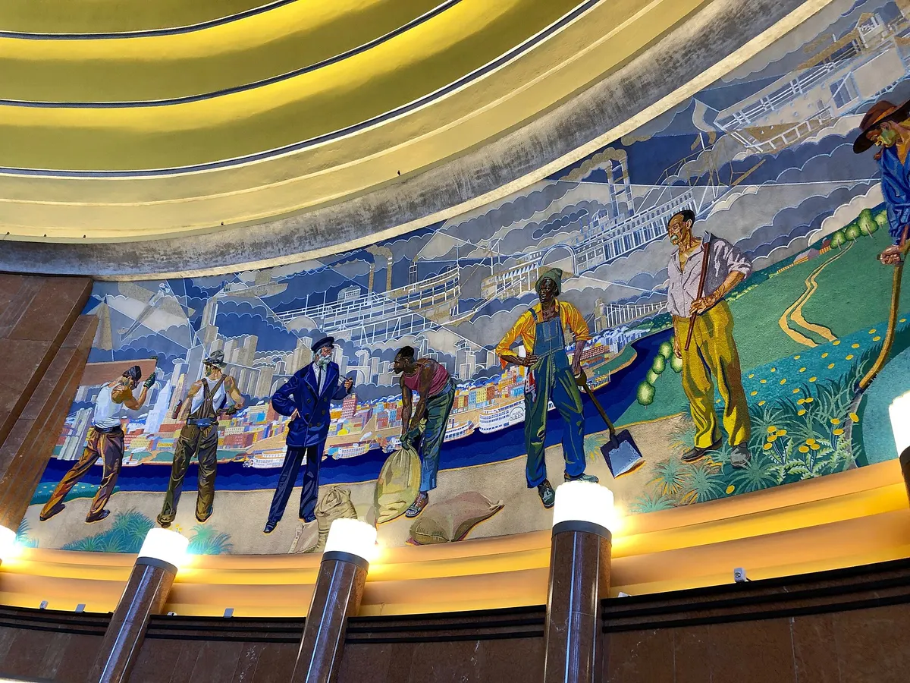
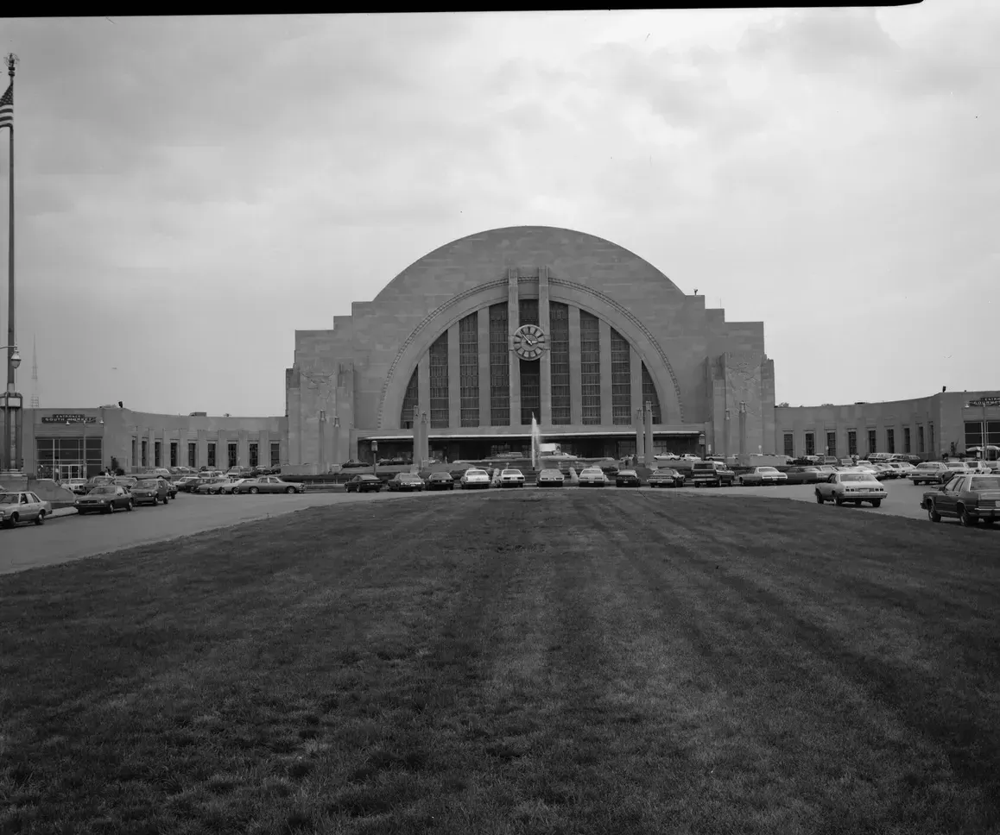

A Station Built for a Crowd
Cincinnati Union Terminal opened in 1933, bringing the city's seven railroads together under one roof. The architects Fellheimer & Wagner planned a traditional station, but partway through the project Paul Cret and Roland Wank reworked it into the Art Deco landmark that stands today.
Its front is a single giant arch. Inside, the half-dome rises 106 feet, and when the station opened it was the largest half-dome in the world.
The Rotunda
Step inside and you're in the rotunda, the great room under the half-dome. Its walls are covered in glass mosaics by the artist Winold Reiss.
The Mosaics

Reiss's murals tell the story of Cincinnati and its workers in colored glass. Some of the largest once lined the station's train concourse. When the concourse was torn down, they were moved to the airport, and nine of them now hang in the Cincinnati Convention Center.
From Station to Museum

As more people flew and drove, fewer took the train. Passenger service ended in 1972, the same year the terminal was listed on the National Register of Historic Places. In 1990 the building reopened as Cincinnati Museum Center, and Amtrak trains returned the next year.
Union Terminal on Film
This clip comes from The Story of Trains, a 1940s film that follows two kids on their first train trip. It opens on Union Terminal's famous arch.